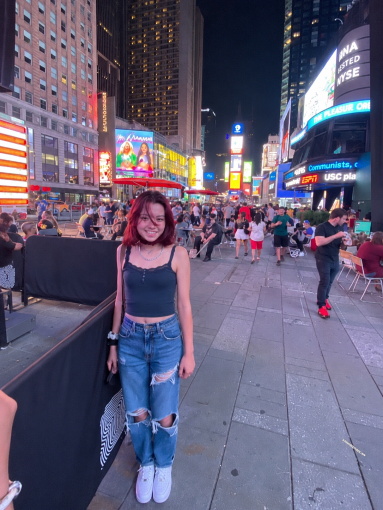
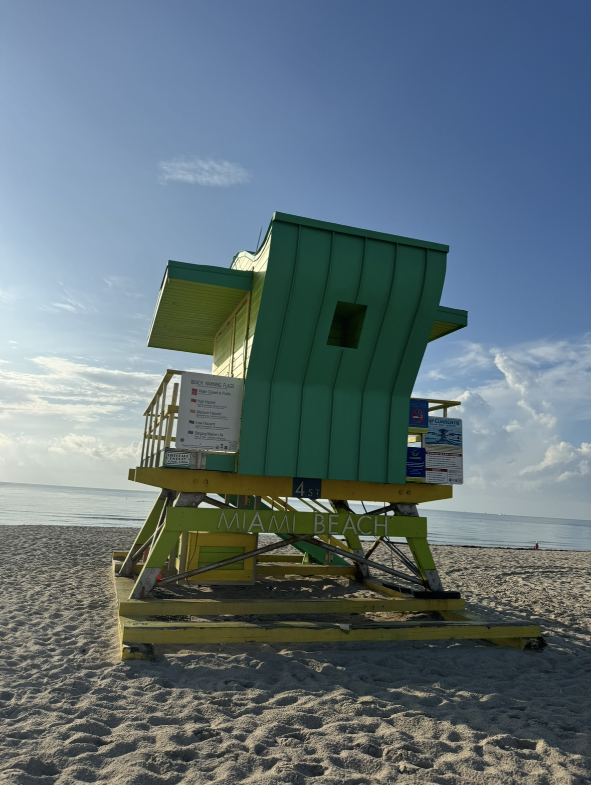
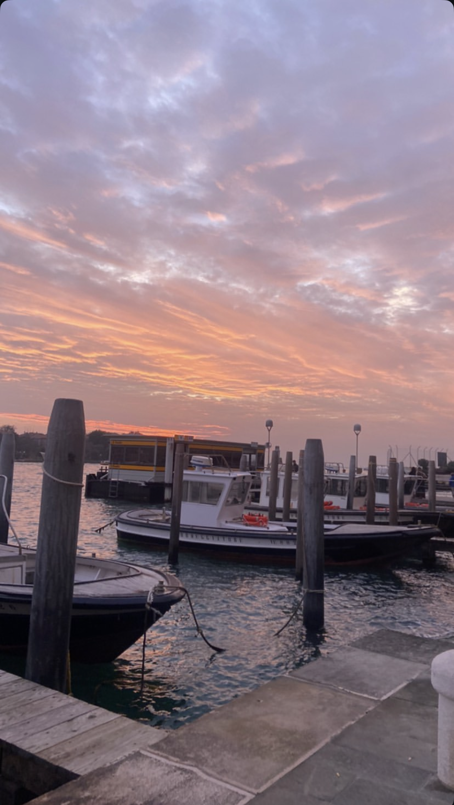
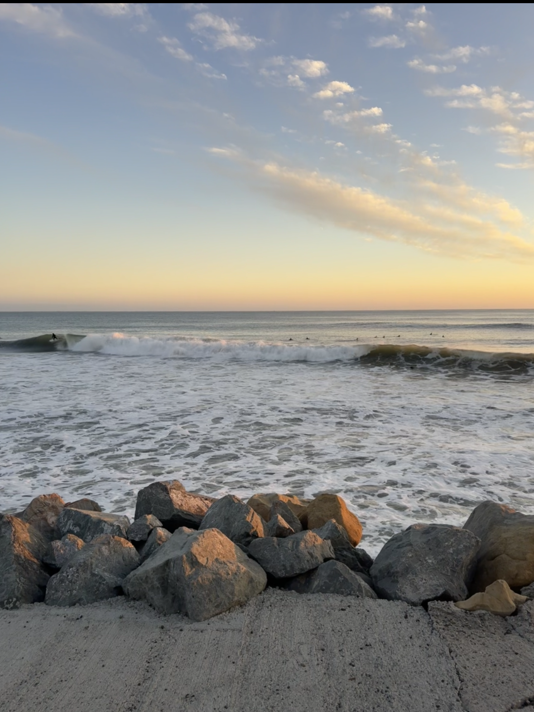
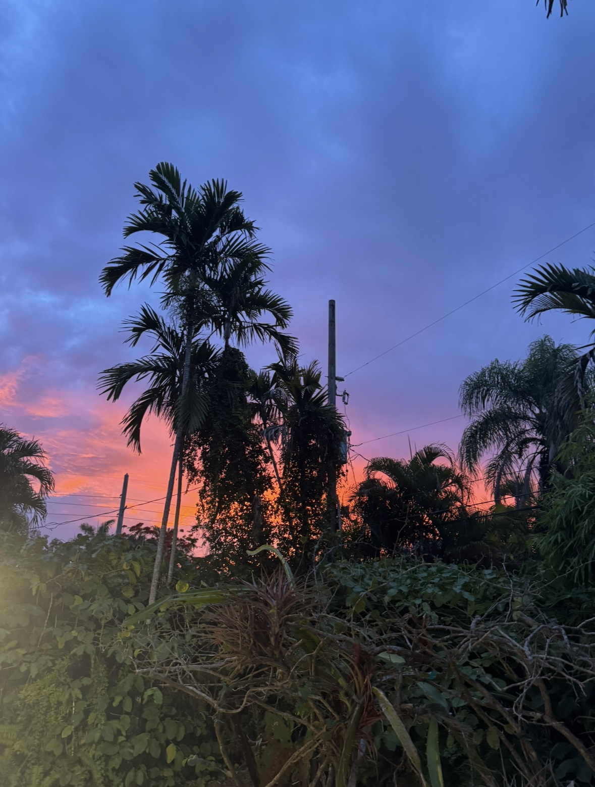
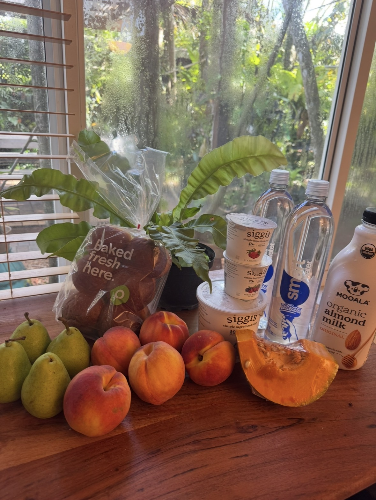

DESIGNER / BUILDER / STORYTELLER
Hi, I’m Heather.
I design, document,
and explore.
I’m a graphic designer with a love for visual systems, travel, and the everyday details that make life interesting.
→ View Work
books, branding
and more.→PlacesTravel photos,
cities, beaches,
and daily life.→AboutBackground,
interests, and
what drives me.→ResuméExperience,
skills, and
disciplines.→
FEATURED PROJECT 01 / 02
On Growth
and Form
A speculative book exploring the intersection of mathematics, nature, and generative systems. The project translates complex ideas about growth, chaos, and identity into a visual language that feels both scientific and poetic.
→ View ProjectPLACES I’VE BEEN
Collecting places,
one photo at a time.





YOUR PORTRAIT
A LITTLE MORE
Same person,
different places.
I’m based between California and Miami, with a background in graphic design and a constant curiosity for the world. I’m interested in how people, systems, and environments shape each other — and I like photographing it all along the way.
YOUR STREET PORTRAIT